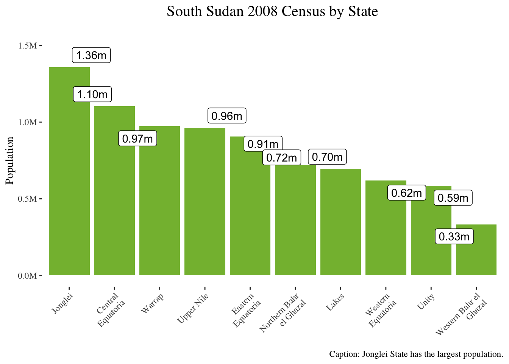

This post demonstrates how to perform data wrangling with the pandas library - I love pandas, although I use R almost exclusively at work. We will first transform and manipulate the data with pandas and then visualize the results with the ggplot2 package.
Data Wrangling
Python
R
Data Science
Data Visualization
Author
Alier Reng
Published
Sunday, January 30, 2022
Introduction
Most data scientists and data analysts would agree with the assertion that data scientists and data analysts spend about 80% of their time cleaning and transforming data - or, simply put, performing data wrangling. Because it’s imperative to transform your data into a tidy form before using it in your data science project. This means that aspiring data scientists and data analysts must learn data manipulation techniques and know the data munging tools in their programming languages of choice to succeed in their data science careers. This post demonstrates how to perform data wrangling with the pandas library - I love pandas, although I use R almost exclusively at work. We will first transform and manipulate the data with pandas and then visualize the results with the ggplot2 package.
Pandas was written by Wes McKinney as ” the open-source Python library for data analysis.” (Python for Data Analysis, 2017, pp.111)
pandas is built on top of NumPy and makes it easy to use in NumPy-centric applications. (Python for Data Analysis, 2017, pp.111)
This is the first article in our Data Wrangling With pandas series. So keep an eye on our next article - we plan to be releasing at least one piece quarterly.
Loading R Packages
Here we’ll load both tidyverse and reticulate even though we’ll use dplyr and ggplot2 from tidyverse (we could have loaded these packages individually, but we decided to load them this way).
# Importing the librariesimport pandas as pdimport numpy as np
Transforming the Data
Data transformation is the most crucial step when doing a data science project (because the success of your project depends on having a cleaned, tidy data). Therefore, it’s worthwhile taking your time to ensure that your data is thoroughly cleaned and transformed appropriately. This is the topic or objective of this article - performing data wrangling with the pandas library.
Importing the Dataset
We’ll use the South Sudan 2008 Census dataset in this project. So, we’ll load it as shown below.
# Importing the datasetss_census_raw = pd.read_csv('/Users/areng/Desktop/cushanalytics/00_data/ss_2008_census_data_raw.csv')# Inspect the first 5 Rowsss_census_raw.head()
Region Region Name Region - RegionId ... Scale Units 2008
0 KN.A2 Upper Nile SS-NU ... units Persons 964353.0
1 KN.A2 Upper Nile SS-NU ... units Persons 150872.0
2 KN.A2 Upper Nile SS-NU ... units Persons 151467.0
3 KN.A2 Upper Nile SS-NU ... units Persons 126140.0
4 KN.A2 Upper Nile SS-NU ... units Persons 103804.0
[5 rows x 10 columns]
# Inspect the last 5 rowsss_census_raw.tail()
Region ... 2008
448 KN.A11 ... 5274.0
449 KN.A11 ... 8637.0
450 NaN ... NaN
451 Source: ... NaN
452 Download URL: ... NaN
[5 rows x 10 columns]
Deleting Rows with Missing Values
As you can see in the above outputs, our dataset contains several columns that we do not need or do not make sense for our purpose, and the last 3 rows contain missing values. Next, let’s also inspect the last five rows and determine if our dataset has any missing values.
# Checking for missing valuesss_census_raw.isna().sum()
Region 1
Region Name 1
Region - RegionId 3
Variable 3
Variable Name 3
Age 3
Age Name 3
Scale 3
Units 3
2008 3
dtype: int64
The above outputs of the last five rows indicate that our data contains multiple rows with missing values (or nas), the data source, and the download URL where we obtained our dataset. We’ll delete these rows that do not contribute any value to our analysis. Also, we see above that our dataset consists of 10 columns (or variables/features) and 453 rows (or observations). To obtain or display our data dimensions in Python, we use the shape, a data attribute. Python's data attributes are different from functions in that we omit the parentheses "()" after the attribute. Further, above, we displayed the counts of missing values in each column of our dataset with isna() to extract the rows with nas and then tallied them with sum() to find the sum of the rows with the missing values in each column. These methods come in handy when we want to quickly summarize the rows and columns with missing values in our dataset.
Next, let’s check the count of rows and columns of our dataset.
# Checking the number of rows and columnsss_census_raw.shape
(453, 10)
Extracting Column Names
Before we begin our data cleaning process, let’s extract the columns as a list using the .to_list() method and subset our data with the columns of interest. Here, we’re only interested in these columns: ‘Region Name’, ‘Variable Name’, ‘Age Name’, and ‘2008’.
# Print column names to the listss_census_raw.columns.to_list()# Subset the columns
# Rename columnscols_names = {'Region Name':'state', 'Variable Name':'gender', 'Age Name':'age_cat', '2008':'population'}# Create new age categories new_age_cats = {'0 to 4':'0-14', '5 to 9':'0-14','10 to 14':'0-14','15 to 19':'15-29', '20 to 24':'15-29','25 to 29':'15-29','30 to 34':'30-49', '35 to 39':'30-49','40 to 44':'30-49','45 to 49':'30-49', '50 to 54':'50-64', '55 to 59':'50-64','60 to 64':'50-64', '65+':'>= 65' }# Clean the datadf = (ss_census_raw [cols] .rename(columns = cols_names) .query('~age_cat.isna()') .assign(gender =lambda x:x['gender'].str.split('\s+').str[1], age_cat =lambda x:x['age_cat'].replace(new_age_cats), population =lambda x:x['population'].astype('int') ) .query('gender != "Total" & age_cat != "Total"') .groupby(['state', 'gender', 'age_cat'])['population'] .sum() .reset_index() )# Inspect the first 5 rowsdf.head()
state gender age_cat population
0 Central Equatoria Female 0-14 221216
1 Central Equatoria Female 15-29 166887
2 Central Equatoria Female 30-49 101676
3 Central Equatoria Female 50-64 23460
4 Central Equatoria Female >= 65 8596
In the preceding code chunk, we first filtered the dataset using the desired columns, renamed the columns with the rename() method, and deleted the rows with missing values with the .query()method.
Using the split()
Further, as you can see above, the Variable Name column contains three pieces of information: Population, Total/Male/Female, and (Number), separated by both commas and spaces. This column contains gender information, so we’re only interested in the Total/Male/Female portion of this column. Therefore, we split this column into three columns using the .split() method (combined with strsince this is a string), but we only kept the middle portion using its index.
Next, we created new age categories to reduce the number of already existing age groups and used replace() to overwrite old categories. Then, we converted the population column 2008 to integer or numeric values using the .astype() method and supplied it with the data type int, short for integer. Lastly, we used the .query() to filter out the total rows in gender and the age category columns, grouped the data by state, gender, and age category, calculated the population’s sum, and then reset the index with .reset_index().
The Replace() Method
The replace() method from the pandas library works as follows:
df.replace(‘old value’, ’new value), for a single value.
df.replace([‘old value 1’, ‘old value 2’, ‘old value 3’], [‘new value 1’, ‘new value 2’, ‘new value 3’]) for a list of values.
df.replace({‘colum_name’: {‘old value 1’:‘new value 1’, ‘old value 2’:‘new value 2’}})
Summarizing Data by State, Gender, and Age Category
Summarizing Data by State - groupby()
# Group the dataset by state and then summarizestate_df = (df .groupby(['state'])['population'] .sum() .reset_index() .sort_values(['population'], ascending =False) )# Print the outputstate_df
state population
2 Jonglei 1358602
0 Central Equatoria 1103557
7 Warrap 972928
6 Upper Nile 964353
1 Eastern Equatoria 906161
4 Northern Bahr el Ghazal 720898
3 Lakes 695730
9 Western Equatoria 619029
5 Unity 585801
8 Western Bahr el Ghazal 333431
Summarizing Data by State and Gender - groupby()
# Group the dataset by state and gender; summarize.gender_df = (df .groupby(['state', 'gender'])['population'] .sum() .reset_index() .sort_values(['population'], ascending =False) )# Print the outputgender_df
state gender population
5 Jonglei Male 734327
4 Jonglei Female 624275
1 Central Equatoria Male 581722
13 Upper Nile Male 525430
0 Central Equatoria Female 521835
14 Warrap Female 502194
15 Warrap Male 470734
3 Eastern Equatoria Male 465187
2 Eastern Equatoria Female 440974
12 Upper Nile Female 438923
8 Northern Bahr el Ghazal Female 372608
7 Lakes Male 365880
9 Northern Bahr el Ghazal Male 348290
6 Lakes Female 329850
19 Western Equatoria Male 318443
18 Western Equatoria Female 300586
11 Unity Male 300247
10 Unity Female 285554
17 Western Bahr el Ghazal Male 177040
16 Western Bahr el Ghazal Female 156391
Now that we have cleaned, manipulated, and transformed our dataset, we will shift our attention to exploratory data analysis (or EDA). So, in the above chunks, we grouped the dataset with the groupby() method by the state column and by state and gender columns, then computed states’ totals with the sum() method. Next, we reset the index with the reset_index() method. Additionally, we sorted our data using the .sort_values(),and we set ascending to False to arrange our dataset in descending order.
Tabulating the Data with the pandas pivot_table()
Summarizing Data by State and Gender - pivot_table()
population
state gender age_cat
total population 8260490
Jonglei Male 0-14 338443
Female 0-14 263646
Central Equatoria Male 0-14 242247
Upper Nile Male 0-14 237461
Warrap Male 0-14 230854
Female 0-14 222745
Central Equatoria Female 0-14 221216
Eastern Equatoria Male 0-14 212728
Jonglei Male 15-29 195110
Above, we tabulated our data with the pivot_table() method. Next, we sorted the table by population column, and then we displayed the table. Here it’s worth noting that we obtained the same results that we got using the groupby() method.
Grouping is one of the most powerful tools that pandas provides. It is the underpinning of the .pivot_table method, which in turn implements the pd.cross_tab function. (Effective Pandas by Matt Harrison, 20221 p. 326)
Marrying R with Python
As we stated in the introductory section, this article aims to demonstrate that data scientists and data analysts (and indeed, data teams) can benefit tremendously by leveraging the powers and strengths of both R and Python instead of viewing these data science programming languages as rivals. Hence, in the below sections, we’ll visualize our data with the ggplot2 package, one of the tidyverse core packages.
Visualizing the Data with ggplot2
ggplot2 is the most popular R data visualization package by Hadley Wickham. To begin with, we used py$ to call Python's object within the R's code chunk in the below chunk. Next, we initialized the canvas with the ggplot() function and assigned the state column to the x-axis and population column to the y-axis. Then, we sorted the state column values using the fct_order() and fct_rev() functions from the forcats package. This orders our data in descending order using the population column.
# Convert Python dataframe into R data frame/tibblestate_tbl <- py$state_df # Plot state datastate_g <- state_tbl %>%# Modify state names to wrap around the x-axis.mutate(state = state %>%str_wrap(width =15),state = state %>%fct_reorder(population) %>%fct_rev(),label = population %>% scales::number(scale =1e-6, accuracy =0.01, suffix ="m")) %>%# Initialize the canvasggplot(aes(state, population)) +# Add the geometries: we're using seaborn colorblind color #7.geom_col(fill ='#84ba3d') + ggrepel::geom_label_repel(aes(label = label)) +# Formattingtheme_tufte() +# Add the title, x-axis title, and y-axis title.labs(title ='South Sudan 2008 Census by State',x =NULL,y ='Population',caption ='Caption: Jonglei State has the largest population.') +# Adjust the y-axis scale.scale_y_continuous(labels = scales::number_format(scale =1e-6, suffix ='M')) +# Modify the y-axis limits.expand_limits(y =c(0, 1500000)) +# Adjust graph attributes.theme(plot.title =element_text(hjust =0.5, face ='plain',size =15,margin =margin(0, 0, 15, 0, unit ="pt")),plot.subtitle =element_text(hjust =0.5, margin =margin(2, 0, 10, 0, unit ="pt")),axis.text.x =element_text(angle =45, hjust =1) ) # Display the graph.state_g

# Graph population by state and gender in ascending order.gender_tbl <- py$gender_df# Plot data by state and gendergender_g <- gender_tbl %>%# Modify state names to wrap around the x-axis.mutate(state = state %>%str_wrap(width =15),state = state %>%fct_reorder(population) %>%fct_rev()) %>%# initialize the canvasggplot(aes(state, population)) +# Add the geometries.geom_col(aes(fill = gender)) +# Adjust the y-axis scale.scale_y_continuous(labels = scales::number_format(scale =1e-6, suffix ='M')) +expand_limits(y =c(0, 1500000)) +# Formattingtheme_clean() +# Add the title, x-axis title, and y-axis title.labs(title ='South Sudan 2008 Census Data by State and Gender',x =NULL,y ='Population') +# Adjust the graph attributes.theme(plot.title =element_text(hjust =0.5,face ='plain',margin =margin(0, 0, 15, 0, unit ="pt")),plot.subtitle =element_text(hjust =0.5,margin =margin(2, 0, 10, 0, unit ="pt")),axis.text.x =element_text(angle =30, hjust =1),legend.position ="top" )# Display the graphgender_g
We visualized the data by state and by state and gender in the preceding two sections. Moreover, we organized the data by population in descending order. It is best to display the data in ascending or descending order to avoid confusing your readers.
Closing Remarks
This post demonstrated how to perform data wrangling with pandas and visualize it with ggplot2 in RStudio. A word of caution, though: we are not saying that this is the actual population of South Sudan. Instead, we used the data to highlight a few data wrangling techniques within the pandas library.
However, on the inferential side, government agencies would draw decisions about public amenities such as schools, kindergartens, maternity wards, and healthcare centers and where to build them from this analysis. The distribution of the national resources and state representations could be determined by this analysis as well. However, that’s not the objective of our post, and thus, we will leave it there.
References
McKinney, W.(2017). Python for Data Analysis, 2nd Edition. O’Reilly Media, Inc.
Harrison, M. (2021). Effective Pandas: Patterns for data manipulation.